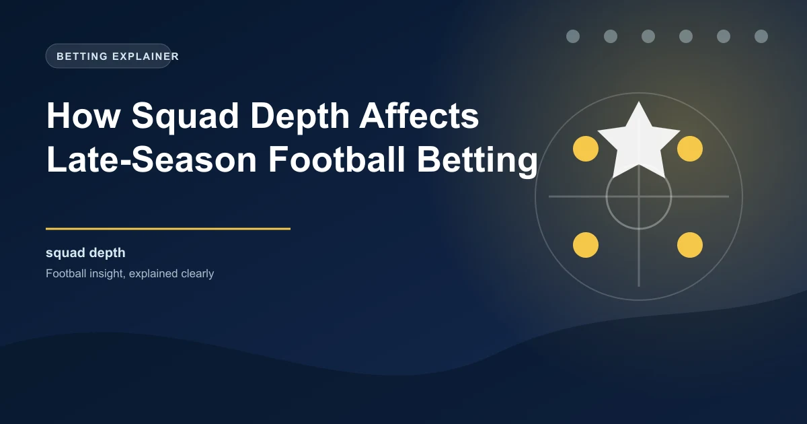

Every football season follows a similar arc. The opening months are characterised by optimism, freshness, and relatively predictable results based on pre-season expectations. But as the season progresses into its final third, a powerful and often underappreciated factor begins to dominate outcomes: squad depth. The teams that can rotate players without losing quality, manage fixture congestion effectively, and keep key players fit are the ones that finish strongest. For bettors, understanding squad depth dynamics is one of the most reliable edges available in the final 10 matchdays of any league season.
In the first half of the season, most teams can field their strongest eleven consistently. Fresh legs, pre-season fitness, and the absence of European competition for most clubs mean that the starting lineup is generally reliable and consistent. But as the calendar turns to the new year, several factors converge to make depth critical.
Fixture congestion accumulates. Teams competing in European competitions, domestic cups, and league matches can face midweek fixtures every week from January onward. Even teams without European commitments deal with cup replays, rescheduled fixtures, and the simple physical toll of playing every three to four days. The human body has limits, and even elite athletes begin to show signs of fatigue as the season wears on.
Injuries accumulate as well. The cumulative stress of a long season means that muscle injuries, joint problems, and wear-and-tear issues increase significantly from February onward. Teams with thin squads find themselves fielding makeshift defences, playing midfielders out of position, or relying on unproven youngsters to fill gaps. These makeshift arrangements almost always produce a measurable drop in performance.
The statistical evidence for squad depth affecting late-season results is robust. Analysis of the Premier League over the past five seasons reveals that teams with more than 20 players who have accumulated over 500 minutes of playing time consistently outperform teams with fewer than 15 such players in the final quarter of the season. The difference is not marginal; it translates to a meaningful advantage in points per match during the run-in.
Consider the contrast between a club like Manchester City and a newly promoted side. City can rotate between world-class players in almost every position, resting Kevin De Bruyne for a Tuesday Champions League match and replacing him with a player who would start for half the league. The promoted side, meanwhile, might have three or four injuries to their starting eleven and be forced to field players who were expected to be squad fillers rather than first-choice options. The quality gap between the starting XI and the bench is one of the most predictive variables for late-season performance.
This pattern holds across all leagues. In the Bundesliga, Bayern Munich's depth advantage has been a decisive factor in their domestic dominance, allowing them to maintain intensity while rivals tire. In La Liga, Real Madrid and Barcelona's superior squad investment ensures they can absorb injuries and suspension without the dramatic performance drops that smaller clubs experience. Even in Ligue 1, where PSG's dominance can mask the underlying dynamics, depth plays a significant role in determining which teams qualify for European competition in the final weeks.
Assessing squad depth requires looking beyond the starting eleven and evaluating the quality available across the entire roster. There are several practical metrics that help quantify this.
Minutes distribution: A healthy squad distributes minutes broadly across 20 or more players. A squad that relies on fewer than 16 players for the vast majority of minutes is vulnerable to fatigue and injury. Check how many players have accumulated significant playing time throughout the season. If the number is low, the team is running on a thin margin.
Bench quality: The quality of substitutes available is just as important as their quantity. A squad might have 22 players, but if the bench is populated by untested youth players or ageing veterans past their peak, the effective depth is much lower than the raw number suggests. Look at the market values, previous experience, and performance metrics of bench players to assess whether they can genuinely maintain the starting XI's level.
Position coverage: Depth is not uniform across all positions. A team might have excellent cover at centre-back but no viable backup for their primary creative midfielder. When the player at a thinly covered position is injured, the team's tactical flexibility collapses. Identifying which positions have strong backup options and which do not can help predict which teams will struggle when specific players are unavailable.
Age profile: Very young squads can suffer from the physical and mental demands of a long season, while very old squads face higher injury risk and slower recovery times. The optimal age profile for late-season performance tends to be a core of players in their mid-to-late twenties with experienced leaders and energetic younger players to provide fresh options.
European competition is both a blessing and a burden when it comes to squad depth. On one hand, teams in the Champions League or Europa League have the financial resources and prestige that attract deeper, higher-quality squads. On the other hand, the additional matches create the fixture congestion that makes depth necessary in the first place.
The effect on league performance is well-documented. Teams playing in the Champions League typically see a measurable dip in league performance during midweek European fixtures and the weekends immediately following them. This is because managers face difficult decisions about rotation: play the strongest team in both competitions and risk fatigue and injury, or rotate for the league match and accept a higher probability of dropping points.
The teams that manage this balancing act most effectively are those with genuine quality throughout their squad. When a manager can rest three or four starters for a Tuesday European fixture without significantly weakening the team for the following weekend's league match, the depth advantage becomes a tangible competitive edge. Conversely, teams that struggle to rotate effectively often find their league form deteriorating in the second half of the season as fatigue accumulates across the squad.
One of the most valuable applications of squad depth analysis is predicting which teams will fade in the final stretch and which will improve. There are clear indicators for both scenarios.
Teams likely to fade typically share these characteristics: a reliance on a small core of 14 or fewer players, a high proportion of minutes concentrated in a few key individuals, an ageing squad profile with limited energy from the bench, and poor results in the second half of the season in previous years. These teams often start the season strongly, building a points buffer from their best XI, but then gradually slip as fatigue and injuries erode their performance level.
Teams likely to improve typically have the opposite profile: broad squad rotation throughout the season, young and energetic players capable of making an impact from the bench, effective depth in key positions, and a track record of strong finishes in previous campaigns. These teams might not lead the league early on because their manager is carefully managing minutes and tactical balance, but they hit their peak form when it matters most in the run-in.
Look at a team sitting fifth in the league in March with a squad of 25 quality players, no European commitments, and a young average age. Compare them to a team in third place relying on 15 core players with several key members over 32 years old. By April and May, the deeper, younger team is statistically more likely to overtake the thinner, older team. This is where betting value lies: the market often prices teams based on their current league position without fully accounting for the depth differential that will influence the remaining fixtures.
The final 10 matchdays of any league season present unique betting opportunities that are directly tied to squad depth dynamics. Here are the most effective strategies for capitalising on these patterns.
Identify teams with superior depth that are still competing for something in the final weeks, whether that is the title, European qualification, or avoiding relegation. These teams will benefit from fresher legs and the ability to rotate, giving them a consistent edge over fatigued opponents. Back them in matches where the opponent is likely to be affected by fixture congestion or has demonstrably thin depth.
Teams with thin squads that have been competing on multiple fronts will show measurable performance drops in the final weeks. Identify these teams and consider backing their opponents, especially if the opponent has rest advantages or superior depth. Look for signs of fatigue in recent matches: declining shot volumes, increased goals conceded, and more substitutions being used early.
Relegation-threatened teams with deep squads have a significant advantage over similarly positioned teams with thin squads. The pressure of relegation battles combined with the physical demands of the final weeks means that depth can be the decisive factor. Teams with quality options from the bench can maintain intensity while thin squads wilt under the combined weight of fatigue and psychological pressure.
When a team plays a midweek European fixture, their manager will often rotate heavily for the following weekend's league match. If the rotated team faces a well-rested opponent with something to play for, the value often lies with the opponent. This is particularly pronounced in the final weeks when every point matters and teams cannot afford to treat any match as a write-off.
Squad depth is not purely a physical advantage; it also has psychological dimensions. Teams with deep squads carry a sense of confidence and resilience that comes from knowing that no single injury or suspension will derail their season. Players on the bench are motivated by the knowledge that they will get opportunities, which maintains squad morale and competitive intensity throughout the group.
Conversely, teams with thin squads often develop a siege mentality as the season progresses. While this can temporarily galvanise performance, it also creates an unsustainable level of physical and emotional output. Players who know they have no replacement become conservative, avoiding the physical risks that are necessary for peak performance. Managers become reluctant to make tactical changes because the alternatives on the bench are insufficient. This rigidity becomes a competitive disadvantage as the season wears on and opponents find ways to exploit predictable patterns.
The most common mistake bettors make in the final weeks of the season is overvaluing current form without accounting for depth dynamics. A team might have won their last three matches, but if those wins came against weakened opponents and required maximum effort from their best XI, the momentum may not be sustainable. Similarly, a team on a poor run might be underperforming due to temporary fixture congestion that will ease once the schedule clears.
Another mistake is assuming that teams with nothing to play for will be easy to beat. While motivation does matter, professional footballers are competing for contracts, future transfers, and personal pride. Teams that are safe from relegation but out of European contention can still perform at a high level, especially if they have depth and are using the final matches to build for next season. Do not dismiss these teams automatically; evaluate their squad situation and tactical approach on a case-by-case basis.
WinFulltime tracks squad rotation, fixture congestion, and depth metrics to deliver accurate predictions for the crucial final matchdays. Make the final stretch count.
Latest Predictions Win
Win